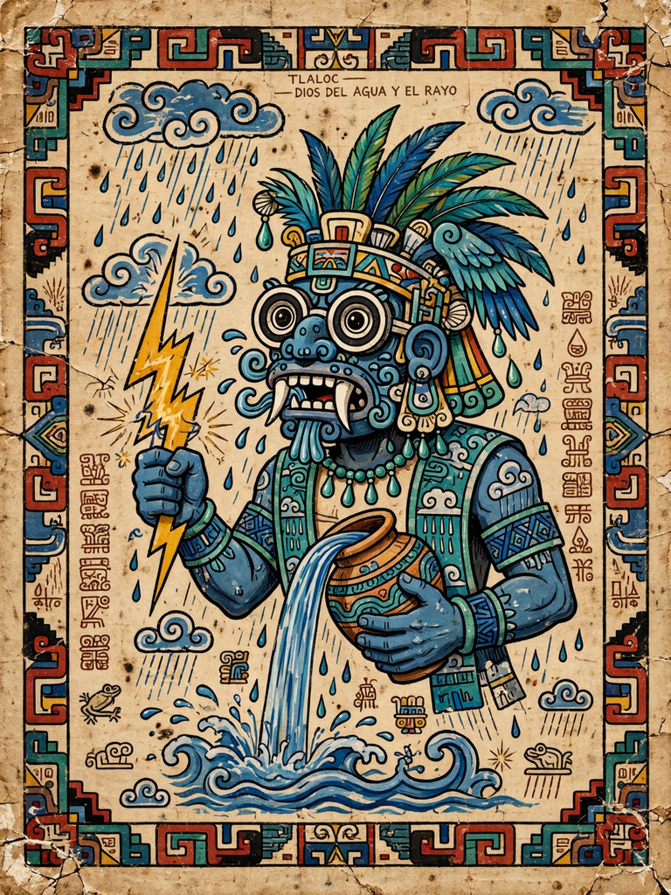

Tlaloc
| Tlaloc | |
|---|---|
| Member of | Aztec pantheon; older Mesoamerican rain cults |
| Abode | Tlalocan; Mount Tlaloc |
| Symbols | Goggle eyes, fanged mouth, lightning, water jars, maize |
| Consort | Chalchiuhtlicue |
| Equivalents | Chaac (Maya); Cocijo (Zapotec); Dzahui (Mixtec) |

Tlaloc (Classical Nahuatl: Tlāloc) is the god of rain, storms, water and earthly fertility in Aztec religion, one of the oldest and most widely worshipped deities in Mesoamerica. His cult reaches back at least to Teotihuacan, whose murals show a goggle-eyed rain being, and he has counterparts among the Maya (Chaac), the Zapotec (Cocijo) and the Mixtec (Dzahui). He is instantly recognisable in art by his ringed "goggle" eyes, fanged upper jaw, and blue or green colouring.
Role and mythology
Tlaloc dwells on Mount Tlaloc east of the Valley of Mexico and in Tlalocan, a paradise of eternal spring placed in the east, where those who died by drowning, lightning or water-related diseases enjoyed a blissful afterlife — in contrast to the dreary journey to Mictlan faced by most of the dead. His assistants, the Tlaloque, carried water in four jars and smashed them with sticks to make thunder, sending beneficial rain, hail, disease or drought according to the jar used. In the Aztec creation myth, Tlaloc was the sun who ruled the third of the successive world-ages, which ended in a rain of fire; his wife was first Xochiquetzal and later Chalchiuhtlicue, goddess of lakes and streams.
Cult and sacrifice
The Great Temple (Templo Mayor) of Tenochtitlan was crowned by twin shrines: one to Huitzilopochtli and one to Tlaloc, symbolising the dual basis of Aztec power in war and agriculture. Festivals in the months of Atlcahualo and Etzalcualiztli involved offerings of children whose tears were believed to summon rain — a practice recorded with horror by Spanish chroniclers and confirmed in part by the excavation of child burials near the Tlaloc shrine and on Mount Tlaloc. Farmers also made offerings at shrines throughout the year to secure the rains on which maize depended.
Legacy
A colossal stone statue often identified with Tlaloc (the so-called Monolith of Coatlinchan, weighing some 150+ tons) was moved in 1964 to the entrance of the National Museum of Anthropology in Mexico City — an event followed, legend says, by an unseasonal rainstorm over the capital. Tlaloc remains a central figure in the study of Mesoamerican religion and a vivid presence in Mexican popular culture.
See also: Mesoamerican religion · Mictlan · Florentine Codex